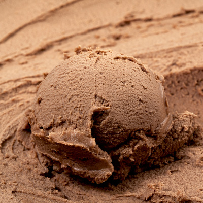
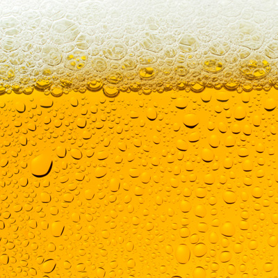
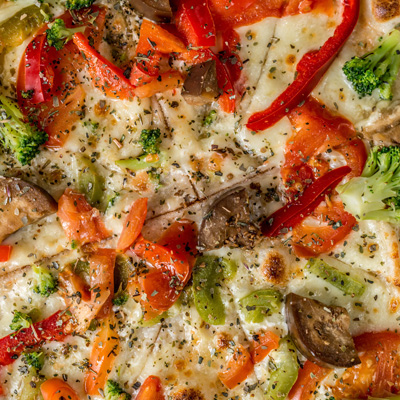
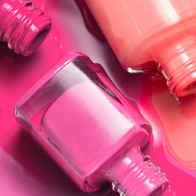
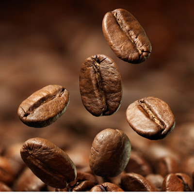

<!DOCTYPE html>
<html lang="en">

<head>
  <meta charset="UTF-8">
  <meta name="viewport" content="width=device-width, initial-scale=1.0">
  <meta http-equiv="X-UA-Compatible" content="ie=edge">
  <title>Cambio climático</title>

  <link rel="stylesheet" href="https://especialess3.lanacion.com.ar/fonts/fonts.css">
  <link rel="stylesheet" href="css/bootstrap-reboot.css">
  <link rel="stylesheet" href="css/styles.css">
</head>

<body>

  <div class="container-title">
    <h2>Cinco propuestas que mejor resisten a la crisis</h1>
      <h5>Frente al estancamiento que vive el consumo, el franchising sigue creciendo a nivel nacional; para este año se proyecta una expansión del 10% del negocio</h5>


      <div class="container">
        <!-- UNO -->
        <div class="modulo-doble">
          <div class="flipper">
            <div class="front">
              <picture>
  <source media="(min-width: 500px)" srcset="img/heladoGR.jpg">
  <source media="(min-width: 200px)" srcset="img/heladoCH.jpg">
  
</picture>

<picture class="numero_1">
<source media="(min-width: 500px)" srcset="img/unoGR.png">
<source media="(min-width: 200px)" srcset="img/uno.png">

</picture>
    
              <h3 class="textos">Helados <br>low cost</h3>
            </div>
            <div class="back">
              <h4>Helados low cost</h3>
                <p>La búsqueda no solo está orientada a marcas que ofrecen una relación precio/calidad atractiva, sino también a propuestas que impliquen inversiones reducidas a la hora de poner en marcha el negocio. Nicolo, la cadena de heladerías se hizo muy popular en los últimos años con una combinación de precios populares y una propuesta llamativa de despacho de helados detrás de un vidrio blindado.</p>
                
                
            </div>
          </div>
        </div>
        <!-- DOS -->
        <div class="modulo-simple">
          <div class="flipper">
            <div class="front">
              
              
              
              <h3 class="textos">Cerveza, la más buscada</h3>
            </div>
            <div class="back">
              <h4>Cerveza, la más buscada</h3>
                <p>Hay al menos 10 fabricantes y vendedores que son franquiciantes. La explicación detrás de la expansión de la malta es simple: "La fila vende". Cuando la gente ve un local que desborda de gente, en forma automática se dispara el pedido de franquicias. Las más buscadas son las franquicias que exigen una inversión de entre 30.000 y 40.000 dólares.</p>
                
            </div>
          </div>
        </div>
        <!-- TRES -->
        <div class="modulo-simple">
          <div class="flipper">
            <div class="front">
              
              
              
              <h3 class="textos">Pizzas de acá y de allá</h3>
            </div>
            <div class="back">
              <h4>Pizzas de acá y de allá</h3>
                <p>En este mercado hay grandes jugadores. Las pizzerías Kentucky que actualmente operan con 42 locales y proyectan sumar una docena. Al mismo segmento apunta Molinos Cañuelas, con su nueva cadena Pizza Alla Pala con tres pizzerias en operaciones y otras tres aperturas confirmadas y KFC Ecuador, que acaba de comprar las licencias para el mercado argentino de las marcas Wendy´s y KFC.</p>
                
            </div>
          </div>
        </div>
        <!-- CUATRO -->
        <div class="modulo-simple">
          <div class="flipper">
            <div class="front">
              
              
              
              <h3 class="textos">Manos express</h3>
            </div>
            <div class="back">
              <h4>Manos express</h3>
                <p>En la categoría “negocios de especialidad”, la asesora financiera Laura Medina descubrió el “nail art” digital, una herramienta que permite pintarse las uñas con diseños que pueden ser personalizados. Adquirió en China la licencia de una impresora para poder realizarlo. En menos de 15 minutos, las clientas tienen sus manos hechas y con esmalte semipermanente con las imágenes que más les gusten. Las franquicias arrancan en los US$4000 como inversión inicial.</p>
                
            </div>
          </div>
        </div>
        <!-- CINCO -->
        <div class="modulo-simple">
          <div class="flipper">
            <div class="front">
              
              
              
              <h3 class="textos">Café for export</h3>
            </div>
            <div class="back">
              <h4>Café for export</h3>
                <p>Las marcas argentinas siguen estando muy bien consideradas en la región, en especial en los países limítrofes. Es el caso de Café Martínez, que gracias a los efectos de la devaluación, harán más rentable el tostado de café, que la empresa hace en la Argentina y luego exporta a mercados de la región. La compañía ya cuenta con 159 locales en la Argentina –de los cuales solo siete son propios– y quince repartidos entre Paraguay, Uruguay, Bolivia, España y Estados Unidos.</p>
                
            </div>
          </div>
        </div>
      </div>
  </div>

  <script>
    window.addEventListener("load", flip(".modulo-doble, .modulo-simple"))

    function flip(selector) {
      let modulos = document.querySelectorAll(selector)
      modulos.forEach(modulo => {
        modulo.addEventListener("click", function () {
          this.classList.toggle("cliqueado")
        })
      })
    }
  </script>

</body>

</html>
